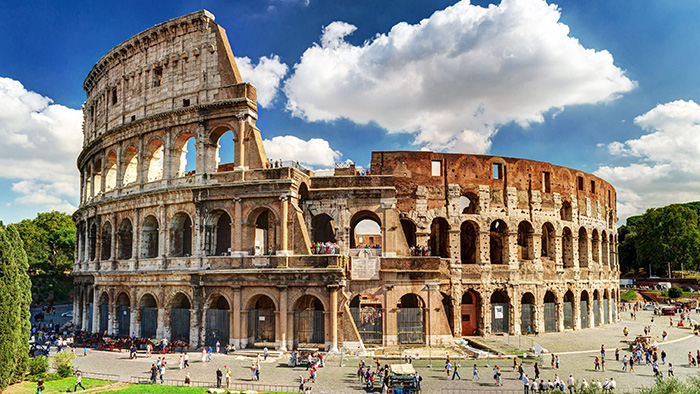

Travel Of Dreams
Amazing
MAKE THE TRIP OF YOUR DEAMS
Dubai
Als Emirats Àrabs, a 200 quilòmetres al nord de la seva capital Abu Dhabi, es troba Dubai, la ciutat del món que més ha crescut en l'última dècada, una destinació turística de luxe cada dia més sol·licitat per viatgers de tot el món. A la nostra guia turística podràs descobrir tots els secrets d'aquesta ciutat que ha començat a donar-se a conèixer a la fi del segle XX.
